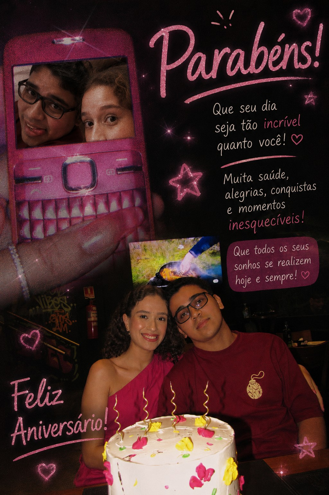

Clique no botão abaixo ❤️

🎂 Feliz Aniversário, Nathaly! ❤️
Hoje é um daqueles dias que merecem ser celebrados com carinho, porque marca a vida de uma pessoa muito especial.
Já são cerca de 7 anos de história, lembranças, conversas, risadas e momentos que ficaram guardados comigo. A vida mudou muita coisa ao longo do caminho, mas algumas pessoas continuam ocupando um lugar especial no coração, e você é uma delas.
Sempre que lembro de nós, lembro dos filmes que planejávamos assistir e que acabaram ficando para depois. Lembro também das manhãs em que você me esperava na padaria bem cedo, momentos simples que hoje se transformaram em lembranças valiosas.
Mais do que qualquer lembrança, admiro a pessoa incrível que você é. Sua força, seu jeito de cuidar das pessoas, seu coração e a forma como consegue iluminar os ambientes por onde passa.
Desejo que este novo ciclo seja cheio de felicidade, saúde, conquistas, paz e momentos inesquecíveis. Que você realize seus sonhos e encontre muitos motivos para sorrir todos os dias.
Obrigado por todas as memórias, por tudo o que vivemos e por ser alguém tão importante na minha história.
Independentemente da situação em que nos encontramos hoje, quero que você saiba que sempre poderá contar comigo.
Você tem meu número, pode mandar mensagem, ligar ou simplesmente aparecer quando precisar conversar. Não é justo eu fingir que não vivi coisas incríveis durante tantos anos, nem fingir que você simplesmente não existe mais.
Nossa história faz parte da minha vida, das minhas melhores lembranças e de quem eu me tornei ao longo do tempo.
E, acima de tudo, quero que saiba de uma coisa:
Você está guardada na melhor parte do meu coração. ❤️
Não porque vivemos apenas momentos felizes, mas porque foi real, importante e significativo. Algumas pessoas deixam marcas que o tempo não apaga, apenas transforma em carinho, respeito e gratidão.
Espero que a vida te devolva em dobro toda a bondade, o carinho e a luz que você espalha por onde passa.
Aproveite muito o seu dia, porque você merece todas as coisas boas que a vida pode oferecer.
Feliz aniversário, Nathaly. 🎉❤️